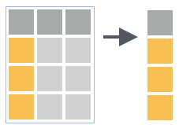
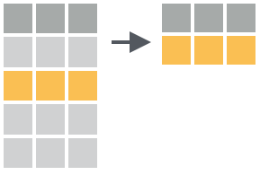
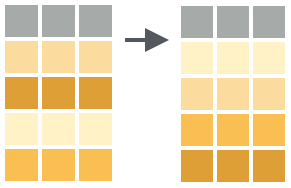
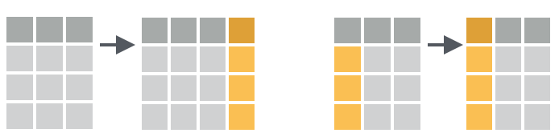
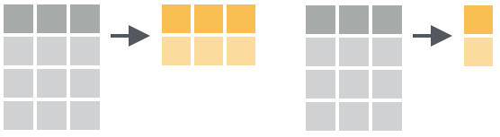
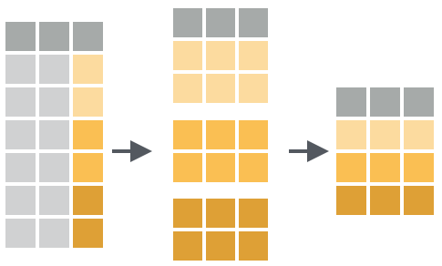

9.4 Manipulação de dados
Com os dados arrumados, a próxima etapa é a manipulação dos dados. O pacote dplyr oferece um conjunto de funções que facilita as operações mais comuns para lidar com dados retangulares de uma forma bem pensada.
Os verbos fundamentais desta gramática de manipulação de dados são:
select(), para selecionar variáveis;filter(), para filtrar observações;arrange(), para classificar variáveis;mutate(), para criar e transformar variáveis;group_by(), para agrupar observações;summarise(), para resumir os dados com medidas estatísticas descritivas;
Estes verbos possuem uma sintaxe consistente com uma sentença gramatical:
verbo(sujeito, complemento)
função(dados, z = x + y)
- o
verboé a função do dplyr; - o
sujeito(dados) é quem sofre a ação e é sempre o primeiro argumento, nomeado (.data); - o
complementosão expressões que podem ser usadas como argumentos (o que é representado pela reticência...no segundo argumento); isso ficará mais claro nos exemplos mais a frente;
Os verbos listados anteriormente possuem versões equivalentes na base do r rblue. Então, por que usar o dplyr ?
-
é muito mais rápido de se aprender, com poucas funções (ou verbos) nomeadas intuitivamente;
-
as funções do dplyr são mais rápidas (parte dos códigos são programados em C++);
-
trabalha bem com dados arrumados e também com sistemas de banco de dados
-
as funções foram projetadas para trabalharem juntas na solução diversos problemas de processamento de dados;
9.4.1 Códigos como fluxogramas
A manipulação de dados requer uma organização apropriada do código. A medida que novas etapas do fluxo de trabalho vão sendo implementadas o código expande-se. As etapas vão sendo implementadas de forma sequencial, combinando funções que geram saídas que servirão de entrada para outras funções na cadeia de processamento.
Essa é justamente a ideia do operador pipe %>%: passar a saída de uma função para outra função como a entrada dessa função por meio de uma seqüência de etapas. O operador %>% está disponível no  através do pacote magrittr.
através do pacote magrittr.
Os pacotes tidyverse integram-se muito bem com o %>%, por isso ele é automaticamente carregado com o tidyverse. Vamos ilustrar as vantagens de uso do %>% com exemplos a seguir.
9.4.1.1 Vantagens do %>%
O exemplo a baixo mostra uma aplicação simples do %>% para extrair a raiz quadrada de um número com a função base::sqrt()e a extração do segundo elemento de um vetor com a função dplyr::nth() (uma função alternativa aos colchetes []).
# chamada tradicional de uma função
sqrt(4)
#> [1] 2
nth(5:1, 2)
#> [1] 4
# chamada de uma função com %>%
4 %>% sqrt()
#> [1] 2
5:1 %>% nth(2)
#> [1] 4Ambas formas realizam a mesma tarefa e com mesmo resultado e o benefício do %>% não fica evidente. Entretanto, quando precisamos aplicar várias funções as vantagens ficam mais óbvias.
No código abaixo tente decifrar o objetivo das operações no vetor x.
x <- c(1, 3, -1, 1, 4, 2, 2, -3)
x
#> [1] 1 3 -1 1 4 2 2 -3
nth(sort(cos(unique(x)), decreasing = TRUE), n = 2)
#> [1] 0.5403023Talvez com o código identado fique mais claro:
nth( # 4
sort( # 3
cos( # 2
unique(x) # 1
),
decreasing = TRUE
),n = 2
)O código acima está aninhando funções e isso leva a uma dificuldade de ler por causa da desordem. Para interpretá-lo precisamos fazer a leitura de dentro para fora:
- mantém somente os valores únicos de x
- calcula o cosseno do resultado de (1)
- coloca em ordem decrescente o resultado de (2)
- extrai o 2° elemento do resultado de (3)
Conclusão: o objetivo era obter o segundo maior número resultante do cosseno do vetor numérico x.
A versão usando pipe é:
x %>%
unique() %>% # 1
cos() %>% # 2
sort(decreasing = TRUE) %>% # 3
nth(n = 2) # 4
#> [1] 0.5403023Dessa forma, o código fica mais simples, legível e explícito. Por isso, daqui para frente, nós utilizaremos extensivamente o operador %>% para ilustrar os verbos do dplyr e suas combinações.
No exemplo anterior nós introduzimos a função dplyr::nth(). Ela é equivalente ao operador colchetes [ da base do R. Se a <- 5:1 então as instruções abaixo produzem resultados equivalentes:
a[2]; nth(a, 2)
#> [1] 4 #> [1] 4
9.4.1.2 O operador . como argumento
Uma representação mais explícita do código usado na cadeia de funções acima, seria com a inclusão do operador . e os nomes dos argumentos das funções:
x %>%
unique(x = .) %>% # 1
sort(x = ., decreasing = TRUE) %>% # 2
cos(x = .) %>% # 3
nth(x = ., n = 2) # 4
#> [1] -0.9899925O tempo a mais digitando é compensado posteriormente quando o você mesmo futuramente tiver que reler o código. Essa forma enfatiza com o . que o resultado à esquerda é usado como entrada para função à direita do %>%.
Mas nem todas funções do  foram construídas com os dados de entrada no primeiro argumento. Essa é a deixa para outra funcionalidade do
foram construídas com os dados de entrada no primeiro argumento. Essa é a deixa para outra funcionalidade do . que é redirecionar os dados de entrada para a posição adequada naquelas funções. Uma função que se encaixa neste caso é a base::grep() que detecta uma expressão regular num conjunto de caracteres (strings).
adverbs <- c("ontem", "hoje", "amanhã")
grep(
pattern = "h",
x = adverbs,
value = TRUE
)
#> [1] "hoje" "amanhã"O código acima seve para retornar os elementos do vetor dias que contenham a letra h. No entanto os dados de entrada da base::grep() são esperados no 2° argumento (x). Para redirecioná-los para essa posição dentro de uma cadeia de funções com %>%, colocamos o operador . no 2° argumento da função:
adverbs %>%
grep(
pattern = "h",
x = .,
value = TRUE
)
#> [1] "hoje" "amanhã"9.4.2 Seleção de variáveis

Para selecionar somente variáveis de interesse em uma tabela de dados podemos usar a função dplyr::select(.data, ...). Nos dados clima_rs_tbl se desejamos selecionar apenas as colunas estacao e tmax aplicamos a dplyr::select() com o 2° argumento listando as colunas que desejamos selecionar:
select(clima_rs_tbl, estacao, tmax)
#> # A tibble: 23 x 2
#> estacao tmax
#> * <chr> <dbl>
#> 1 Alegrete 25.4
#> 2 Bagé 24.1
#> 3 Bento Gonçalves 23
#> 4 Bom Jesus 20.3
#> 5 Cachoeira do Sul 25.1
#> 6 Caxias do Sul 21.8
#> 7 Cruz Alta 24.5
#> 8 Encruzilhada do Sul 22.5
#> 9 Guaporé 24.7
#> 10 Iraí 27.1
#> # ... with 13 more rowsO resultado é um subconjunto dos dados originais contendo apenas as colunas nomeadas nos argumentos seguintes aos dados de entrada.
A função dplyr::select() possui funções auxiliares para seleção de variáveis:
clima_rs_tbl %>%
# as variáveis entre uf e tmax
select(., uf:tmax) %>%
head(., n = 3)
#> # A tibble: 3 x 3
#> uf prec tmax
#> <chr> <dbl> <dbl>
#> 1 RS 1492. 25.4
#> 2 RS 1300. 24.1
#> 3 RS 1684. 23
clima_rs_tbl %>%
# todas variáveis menos as entre codigo:uf
select(., -(codigo:uf)) %>%
head(., n = 3)
#> # A tibble: 3 x 2
#> prec tmax
#> <dbl> <dbl>
#> 1 1492. 25.4
#> 2 1300. 24.1
#> 3 1684. 23
clima_rs_tbl %>%
# ordem inversa das variáveis
select(., tmax:codigo) %>%
head(., n = 3)
#> # A tibble: 3 x 5
#> tmax prec uf estacao codigo
#> <dbl> <dbl> <chr> <chr> <chr>
#> 1 25.4 1492. RS Alegrete 83931
#> 2 24.1 1300. RS Bagé 83980
#> 3 23 1684. RS Bento Gonçalves 83941
clima_rs_tbl %>%
# nomes que contenham a letra "a"
select(., contains("a")) %>%
head(n = 3)
#> # A tibble: 3 x 2
#> estacao tmax
#> <chr> <dbl>
#> 1 Alegrete 25.4
#> 2 Bagé 24.1
#> 3 Bento Gonçalves 23
clima_rs_tbl %>%
# variáveis que iniciam com "c"
select(., starts_with("c")) %>%
head(., n = 3)
#> # A tibble: 3 x 1
#> codigo
#> <chr>
#> 1 83931
#> 2 83980
#> 3 83941
clima_rs_tbl %>%
# usando um vetor de caracteres
select(., one_of(c("estacao", "uf"))) %>%
head(., n = 3)
#> # A tibble: 3 x 2
#> estacao uf
#> <chr> <chr>
#> 1 Alegrete RS
#> 2 Bagé RS
#> 3 Bento Gonçalves RS
clima_rs_tbl %>%
# combinações
select(., -uf, ends_with("o")) %>%
head(., n = 3)
#> # A tibble: 3 x 4
#> codigo estacao prec tmax
#> <chr> <chr> <dbl> <dbl>
#> 1 83931 Alegrete 1492. 25.4
#> 2 83980 Bagé 1300. 24.1
#> 3 83941 Bento Gonçalves 1684. 23
clima_rs_tbl %>%
# variáveis que inciam com letras minúsculas e com 4 caracteres
select(., matches("^[a-z]{4}$")) %>%
head(., n = 3)
#> # A tibble: 3 x 2
#> prec tmax
#> <dbl> <dbl>
#> 1 1492. 25.4
#> 2 1300. 24.1
#> 3 1684. 23O último exemplo usa uma expressão regular (regex). Regex é uma linguagem para descrever e manipular caracteres de texto. Há livros sobre este assunto e diversos tutorias sobre regex no R. Para saber mais sobre isso veja o capítulo sobre strings do livro de H. Wickham and Grolemund (2017). Conhecendo o básico, você poupará tempo automatizando a formatação de caracteres de texto.
Veja mais funções úteis para seleção de variáveis em ?dplyr::select.
9.4.3 Seleção de observações

A filtragem de observações geralmente envolve uma expressão que retorna valores lógicos ou as posições das linhas selecionadas (como a função which()).
A função dplyr::filter() permite filtrar observações de um data frame correspondentes a alguns critérios lógicos. Estes critérios podem ser passados um de cada vez ou com um operador lógico (e: &, ou: |). Veja abaixo alguns exemplos de filtragem de observações:
- linhas correspondentes ao
codigoda estação 83936.
clima_rs_tbl %>%
filter(codigo == 83936)
#> # A tibble: 1 x 5
#> codigo estacao uf prec tmax
#> <chr> <chr> <chr> <dbl> <dbl>
#> 1 83936 Santa Maria RS 1617. 24.9- linhas da variável
estacaoque contenham o vetor caracterelitoraneas.
litoraneas <- c("Torres",
"Guaporé")
clima_rs_tbl %>%
filter(estacao %in% litoraneas)
#> # A tibble: 2 x 5
#> codigo estacao uf prec tmax
#> <chr> <chr> <chr> <dbl> <dbl>
#> 1 83915 Guaporé RS 1759. 24.7
#> 2 83948 Torres RS 1363. 22.3- observações com
tmaxacima de 10% da média
filter(clima_rs_tbl, tmax > 1.1*mean(tmax))
#> # A tibble: 1 x 5
#> codigo estacao uf prec tmax
#> <chr> <chr> <chr> <dbl> <dbl>
#> 1 83881 Iraí RS 1807. 27.1- observações com
tmaxeprecacima de suas médias
clima_rs_tbl %>%
filter(
tmax > mean(tmax),
prec > mean(prec)
)
#> # A tibble: 7 x 5
#> codigo estacao uf prec tmax
#> <chr> <chr> <chr> <dbl> <dbl>
#> 1 83912 Cruz Alta RS 1631. 24.5
#> 2 83915 Guaporé RS 1759. 24.7
#> 3 83881 Iraí RS 1807. 27.1
#> 4 83880 Palmeira das Missões RS 1748. 24
#> 5 83936 Santa Maria RS 1617. 24.9
#> 6 83907 São Luiz Gonzaga RS 1771. 26.1
#> 7 83927 Uruguaiana RS 1647. 25.8
# equivalente a
#clima_rs %>%
# filter(tmax > mean(tmax) & prec > mean(prec))- observações cuja variável
estacaotem a palavra "Sul"
# estações com "Sul" no nome
clima_rs_tbl %>%
filter(str_detect(estacao, "Sul"))
#> # A tibble: 3 x 5
#> codigo estacao uf prec tmax
#> <chr> <chr> <chr> <dbl> <dbl>
#> 1 83963 Cachoeira do Sul RS 1477. 25.1
#> 2 83942 Caxias do Sul RS 1823 21.8
#> 3 83964 Encruzilhada do Sul RS 1511. 22.5
O exemplo acima é mais uma operação com caracteres onde foi usada a função stringr::str_detect() para detectar os elementos da variável do tipo caractere que contenham o termo “Sul”. O pacote stringr (Hadley Wickham 2018) fornece funções para casar padrões de caracteres de texto e os nomes das funções são fáceis de lembrar. Todos começam com str_ (de string) seguido do verbo, p.ex.:
str_replace_all(
string = c(“abc”, “lca”),
pattern = “a”,
replacement = “A”
)
#> [1] “Abc” “lcA”
A seleção de observações também pode ser baseada em índices passados para função dplyr::slice() que retorna o subconjunto de observações correspondentes. Abaixo vejamos alguns exemplos de filtragem de linhas baseada em índices ou posições:
#linhas 2 e 4
clima_rs_tbl %>%
slice(., c(2,4))
#> # A tibble: 2 x 5
#> codigo estacao uf prec tmax
#> <chr> <chr> <chr> <dbl> <dbl>
#> 1 83980 Bagé RS 1300. 24.1
#> 2 83919 Bom Jesus RS 1807. 20.3
#última linha
clima_rs_tbl %>%
slice(., n())
#> # A tibble: 1 x 5
#> codigo estacao uf prec tmax
#> <chr> <chr> <chr> <dbl> <dbl>
#> 1 83927 Uruguaiana RS 1647. 25.8
# exlui da última à 3a linha
clima_rs_tbl %>%
slice(., -(n():3))
#> # A tibble: 2 x 5
#> codigo estacao uf prec tmax
#> <chr> <chr> <chr> <dbl> <dbl>
#> 1 83931 Alegrete RS 1492. 25.4
#> 2 83980 Bagé RS 1300. 24.1
# linhas com tmax > 26
clima_rs_tbl %>%
slice(., which(tmax > 26))
#> # A tibble: 3 x 5
#> codigo estacao uf prec tmax
#> <chr> <chr> <chr> <dbl> <dbl>
#> 1 83881 Iraí RS 1807. 27.1
#> 2 83929 Itaqui RS 1369. 26.2
#> 3 83907 São Luiz Gonzaga RS 1771. 26.1
# linhas com tmax mais próxima a média de tmax
clima_rs_tbl %>%
slice(., which.min(abs(tmax - mean(tmax))))
#> # A tibble: 1 x 5
#> codigo estacao uf prec tmax
#> <chr> <chr> <chr> <dbl> <dbl>
#> 1 83880 Palmeira das Missões RS 1748. 249.4.4 Reordenando dados

As vezes é útil reordenar os dados segundo a ordem (crescente ou decrescente) dos valores de uma variável. Por exemplo, os dados clima_rs_tbl podem ser arranjados em ordem decrescente da precipitação anual, conforme abaixo.
clima_rs_tbl %>%
arrange(., desc(prec)) %>%
head(., n = 3)
#> # A tibble: 3 x 5
#> codigo estacao uf prec tmax
#> <chr> <chr> <chr> <dbl> <dbl>
#> 1 83942 Caxias do Sul RS 1823 21.8
#> 2 83919 Bom Jesus RS 1807. 20.3
#> 3 83881 Iraí RS 1807. 27.1A função dplyr::arrange() por padrão ordena os dados em ordem crescente. A função dplyr::desc() ordena os valores da variável em ordem descendente.
Os dados ordenados pela tmax, ficam da seguinte forma:
clima_rs_tbl %>%
arrange(., tmax) %>%
head(., n = 3)
#> # A tibble: 3 x 5
#> codigo estacao uf prec tmax
#> <chr> <chr> <chr> <dbl> <dbl>
#> 1 83919 Bom Jesus RS 1807. 20.3
#> 2 83995 Rio Grande RS 1234. 21.7
#> 3 83942 Caxias do Sul RS 1823 21.89.4.5 Criando e renomeando variáveis

Uma nova variável pode ser adicionada aos dados através da função dplyr::mutate(). A tmax expressa em Kelvin pode ser adicionada aos dados clima_rs_tbl, com:
clima_rs_tbl %>%
# tmax em Kelvin
mutate(., tmaxK = tmax + 273.15) %>%
# só as colunas de interesse
select(., contains("tmax")) %>%
# 3 primeiras linhas
head(., n = 3)
#> # A tibble: 3 x 2
#> tmax tmaxK
#> <dbl> <dbl>
#> 1 25.4 299.
#> 2 24.1 297.
#> 3 23 296.Podemos renomear variáveis com a função dplyr::rename().
clima_rs_tbl %>%
rename(.,
"id" = codigo,
"site" = estacao,
"temp_max" = tmax,
"precip" = prec
) %>%
head(., n = 3)
#> # A tibble: 3 x 5
#> id site uf precip temp_max
#> <chr> <chr> <chr> <dbl> <dbl>
#> 1 83931 Alegrete RS 1492. 25.4
#> 2 83980 Bagé RS 1300. 24.1
#> 3 83941 Bento Gonçalves RS 1684. 23Podemos sobrescrever variáveis e recodificar seus valores, conforme o exemplo abaixo. A variável site será corrigida, de forma os valores iguais a “A803” sejam substituídos por “A003”.
prec_anual_corr <- prec_anual %>%
mutate(
site = recode(site, A803 = "A003")
)
tail(prec_anual_corr, n = 4)
#> site ano prec
#> 5 A002 2002 1630
#> 6 A003 2004 1300
#> 7 A003 2005 1950
#> 8 A003 2006 1100Podemos preencher os valores faltantes de uma variável por um valor prescrito, por exemplo baseado na média de outras observações, ou nos valores prévios, ou posteriores. Variáveis podem ser derivadas das variáveis sendo criadas dentro da dplyr::mutate().
# preenchendo prec faltante pela média
prec_anual_comp %>%
mutate(.,
prec = replace_na(prec,
mean(prec, na.rm = TRUE)
),
ndias = ifelse(ano %% 4 == 0,
366,
365),
# intensidade de ndias, criada na linha acima
intensidade = prec / ndias
)
#> # A tibble: 24 x 5
#> site ano prec ndias intensidade
#> <fct> <dbl> <dbl> <dbl> <dbl>
#> 1 A001 2000 1800 366 4.92
#> 2 A001 2001 1400 365 3.84
#> 3 A001 2002 1550 365 4.25
#> 4 A001 2004 1550 366 4.23
#> 5 A001 2005 1550 365 4.25
#> 6 A001 2006 1550 365 4.25
#> 7 A002 2000 1750 366 4.78
#> 8 A002 2001 1470 365 4.03
#> 9 A002 2002 1630 365 4.47
#> 10 A002 2004 1550 366 4.23
#> # ... with 14 more rows
prec_anual_comp %>%
# preenche com a observação prévia
fill(prec, .direction = "down")
#> # A tibble: 24 x 3
#> site ano prec
#> <fct> <dbl> <dbl>
#> 1 A001 2000 1800
#> 2 A001 2001 1400
#> 3 A001 2002 1400
#> 4 A001 2004 1400
#> 5 A001 2005 1400
#> 6 A001 2006 1400
#> 7 A002 2000 1750
#> 8 A002 2001 1470
#> 9 A002 2002 1630
#> 10 A002 2004 1630
#> # ... with 14 more rows
prec_anual_comp %>%
# preenche com a observação posterior
fill(prec, .direction = "up")
#> # A tibble: 24 x 3
#> site ano prec
#> <fct> <dbl> <dbl>
#> 1 A001 2000 1800
#> 2 A001 2001 1400
#> 3 A001 2002 1750
#> 4 A001 2004 1750
#> 5 A001 2005 1750
#> 6 A001 2006 1750
#> 7 A002 2000 1750
#> 8 A002 2001 1470
#> 9 A002 2002 1630
#> 10 A002 2004 1300
#> # ... with 14 more rows9.4.6 Agregando observações

A função dplyr::summarise() (ou dplyr::sumarize()) agrega valores de uma variável e os fornece para uma função que retorna um único resultado. O resultado será armazenado em um data frame.
Por exemplo, qual a prec média anual do RS?
clima_rs_tbl %>%
summarise(
.,
prec_med = mean(prec)
)
#> # A tibble: 1 x 1
#> prec_med
#> <dbl>
#> 1 1554.Se você só quer o valor (ou o vetor), ao invés de um data frame, pode usar a função dplyr::pull():
clima_rs_tbl %>%
summarise(
.,
prec_med = mean(prec)
) %>%
pull()
#> [1] 1554.183Podemos aplicar uma ou mais funções a mais de uma variável usando dplyr::summarise_at():
clima_rs_tbl %>%
summarise_at(
.,
.vars = vars(prec, tmax),
.funs = funs(min, median, max),
na.rm = TRUE
)
#> # A tibble: 1 x 6
#> prec_min tmax_min prec_median tmax_median prec_max tmax_max
#> <dbl> <dbl> <dbl> <dbl> <dbl> <dbl>
#> 1 1229. 20.3 1617. 24.1 1823 27.1Observações repetidas devem ser removidas dos dados antes de qualquer cálculo. Suponha os dados abaixo:
prec_anual_comp_rep <-
prec_anual_comp %>%
mutate(
site = recode(site, A803 = "A003"),
ano = NULL
) %>%
# preenche com a observação posterior
fill(., prec, .direction = "up")
prec_anual_comp_rep
#> # A tibble: 24 x 2
#> site prec
#> <fct> <dbl>
#> 1 A001 1800
#> 2 A001 1400
#> 3 A001 1750
#> 4 A001 1750
#> 5 A001 1750
#> 6 A001 1750
#> 7 A002 1750
#> 8 A002 1470
#> 9 A002 1630
#> 10 A002 1300
#> # ... with 14 more rowsPara desconsiderar linhas duplicadas nos dados usamos a função dplyr::distinct():
# remove observações repetidas
prec_anual_comp_rep %>%
distinct(site, prec)
#> # A tibble: 10 x 2
#> site prec
#> <fct> <dbl>
#> 1 A001 1800
#> 2 A001 1400
#> 3 A001 1750
#> 4 A002 1750
#> 5 A002 1470
#> 6 A002 1630
#> 7 A002 1300
#> 8 A003 1300
#> 9 A003 1950
#> 10 A003 1100A função dplyr::count() é útil para obter a frequência de ocorrência de uma variável ou da combinação de variáveis.
prec_anual_comp_rep %>%
count(site)
#> # A tibble: 3 x 2
#> site n
#> <fct> <int>
#> 1 A001 6
#> 2 A002 6
#> 3 A003 12
prec_anual_comp_rep %>%
count(site, prec)
#> # A tibble: 10 x 3
#> site prec n
#> <fct> <dbl> <int>
#> 1 A001 1400 1
#> 2 A001 1750 4
#> 3 A001 1800 1
#> 4 A002 1300 3
#> 5 A002 1470 1
#> 6 A002 1630 1
#> 7 A002 1750 1
#> 8 A003 1100 1
#> 9 A003 1300 4
#> 10 A003 1950 79.4.7 Agrupando observações

Frequentemente temos que agrupar observações em categorias ou grupos para realizar uma análise estatística. A função dplyr::group_by() é uma função silenciosa que separa (invisivelmente) as observações em categorias ou grupos. A única mudança ao aplicar a dplyr::group_by() à um data frame é a indicação da variável agrupada e o seu número de grupos na saída do console. No exemplo a seguir vamos agrupar os dados prec_anual_tbl por site e teremos 4 grupos para esta variável.
prec_anual_tbl %>%
group_by(site)
#> # A tibble: 8 x 4
#> # Groups: site [4]
#> site ano prec intensidade
#> <chr> <dbl> <dbl> <dbl>
#> 1 A001 2000 1800 4.93
#> 2 A001 2001 1400 3.83
#> 3 A002 2000 1750 4.79
#> 4 A002 2001 1470 4.02
#> 5 A002 2002 1630 4.46
#> 6 A003 2004 1300 3.56
#> 7 A803 2005 1950 5.34
#> 8 A803 2006 1100 3.01A grande funcionalidade da dplyr::group_by() surge quando combinada com a função dplyr::summarise(), o que nos permite obter resumos estatísticos para cada grupo da variável.
Por exemplo a chuva anual média por site é obtida com o seguinte código:
prec_anual_tbl %>%
group_by(., site) %>%
summarise(., prec_med = mean(prec))
#> # A tibble: 4 x 2
#> site prec_med
#> <chr> <dbl>
#> 1 A001 1600
#> 2 A002 1617.
#> 3 A003 1300
#> 4 A803 1525A prec média para cada ano e o número de anos utilizados em seu cálculo é obtida por:
prec_anual_tbl %>%
group_by(., ano) %>%
summarise(
.,
prec_med = mean(prec),
nobs = n()
)
#> # A tibble: 6 x 3
#> ano prec_med nobs
#> <dbl> <dbl> <int>
#> 1 2000 1775 2
#> 2 2001 1435 2
#> 3 2002 1630 1
#> 4 2004 1300 1
#> 5 2005 1950 1
#> 6 2006 1100 1A função n() conta quantas observações temos em um subconjunto dos dados.
Os grupos podem ser compostos de mais de uma variável. Para o exemplo com os dados prec_anual_long;
prec_anual_long
#> # A tibble: 16 x 4
#> site ano variavel medida
#> <chr> <dbl> <chr> <dbl>
#> 1 A001 2000 prec 1800
#> 2 A001 2001 prec 1400
#> 3 A002 2000 prec 1750
#> 4 A002 2001 prec 1470
#> 5 A002 2002 prec 1630
#> 6 A003 2004 prec 1300
#> 7 A803 2005 prec 1950
#> 8 A803 2006 prec 1100
#> 9 A001 2000 intensidade 4.93
#> 10 A001 2001 intensidade 3.83
#> 11 A002 2000 intensidade 4.79
#> 12 A002 2001 intensidade 4.02
#> 13 A002 2002 intensidade 4.46
#> 14 A003 2004 intensidade 3.56
#> 15 A803 2005 intensidade 5.34
#> 16 A803 2006 intensidade 3.01podemos obter a média por variavel e site, fazendo:
estats_por_site_var <- prec_anual_long %>%
group_by(site, variavel) %>%
summarise(
media = mean(medida, na.rm = TRUE)
) %>%
arrange(variavel, site)
estats_por_site_var
#> # A tibble: 8 x 3
#> # Groups: site [4]
#> site variavel media
#> <chr> <chr> <dbl>
#> 1 A001 intensidade 4.38
#> 2 A002 intensidade 4.43
#> 3 A003 intensidade 3.56
#> 4 A803 intensidade 4.18
#> 5 A001 prec 1600
#> 6 A002 prec 1617.
#> 7 A003 prec 1300
#> 8 A803 prec 1525Com o conjunto de verbos exemplificados você agora é capaz de realizar as tarefas mais comuns de manipulação de dados tabulares de forma clara e confiável.
Há mais funções úteis disponíveis no pacote dplyr e você é encorajado a descubrí-las.
9.4.8 Combinação de dados
O processamento de dados frequentemente envolve a manipulação de diversas tabelas de dados. Ás vezes precisamos juntar dados de diferentes fontes, formar uma tabela única de dados com o período em comum à elas, ou combiná-las para compará-las.
A combinação de 2 data frames, com observações similares, que tem variáveis diferentes e algumas em comum é uma tarefa muito comum na manipulação de conjuntos dados. Este tipo de operação é chamada de junção (do termo em inglês join) de tabelas . O pacote dplyr possui uma gama de funções do tipo join para combinar data frames, genericamente representadas por <tipo>_join(), onde <tipo> pode ser substituído por dplyr::full_join(), dplyr::inner_join(), dplyr::left_join(), dplyr::right_join().
Essas funções combinam informação em dois data frames baseada na unificação de valores entre as variáveis que ambos compartilham.
Vamos considerar os dados clima_rs_tbl e metadados_rs. Para melhor compreensão do exemplo vamos remover algumas variáveis.
# normais climatológicas das estaçõess
clima_rs_tbl <- clima_rs_tbl %>%
select(-(estacao:uf))
head(clima_rs_tbl)
#> # A tibble: 6 x 3
#> codigo prec tmax
#> <chr> <dbl> <dbl>
#> 1 83931 1492. 25.4
#> 2 83980 1300. 24.1
#> 3 83941 1684. 23
#> 4 83919 1807. 20.3
#> 5 83963 1477. 25.1
#> 6 83942 1823 21.8
# metadados das estações convertidos para tibble
metadados_rs <- metadados_rs %>%
as_tibble()
head(metadados_rs)
#> # A tibble: 6 x 4
#> codigo lon lat alt
#> <chr> <dbl> <dbl> <dbl>
#> 1 83931 -55.5 -29.7 121.
#> 2 83980 -54.1 -31.3 242.
#> 3 83941 -51.5 -29.2 640
#> 4 83919 -50.4 -28.7 1048.
#> 5 83959 -53.5 -30.5 450
#> 6 83963 -52.9 -30.0 72.7A variável comum às duas tabelas é:
var_comum <- names(clima_rs_tbl) %in% names(metadados_rs)
names(clima_rs_tbl)[var_comum]
#> [1] "codigo"Vamos comparar os valores da variável codigo em cada tabela de dados para verificar se todos valores contidos em uma tabela também estão presentes na outra e vice-versa.
Para saber se algum valor da variável codigo da tabela clima_rs_tbl não está contido na tabela metadados_rs podemos usar o seguinte código:
# algum codigo não está presente na tabela metadados_rs
clima_rs_tbl %>%
filter(., ! codigo %in% metadados_rs$codigo ) %>%
select(., codigo)
#> # A tibble: 0 x 1
#> # ... with 1 variable: codigo <chr>Não há nenhum caso.
Analogamente, vamos verificar se algum valor da variável codigo dos metadados_rs não está contido em clima_rs_tbl.
# algum codigo não está presente na tabela metadados_rs
metadados_rs %>%
filter(., ! codigo %in% clima_rs_tbl$codigo )%>%
select(., codigo)
#> # A tibble: 7 x 1
#> codigo
#> <chr>
#> 1 83959
#> 2 83885
#> 3 83985
#> 4 83983
#> 5 83953
#> 6 83909
#> 7 83918Obtemos que 7 valores da variável codigo dos metadados_rs que não estão presentes na tabela clima_rs_tbl. Portanto, não há valores de tmax e prec para essas observações.
Suponha agora que desejássemos visualizar a variação espacial da precipitação (prec) ou da temperatura máxima do ar (tmax) climatológica. Precisaríamos além dessas variáveis, as coordenadas geográficas das estações meteorológicas para plotar sua localização espacial. As coordenadas lon e lat da metadados_rs podem ser combinadas com clima_rs_tbl em uma nova tabela (clima_rs_comb), usando a função dplyr::full_join():
clima_rs_comb <- full_join(
x = clima_rs_tbl,
y = metadados_rs,
by = "codigo")
clima_rs_comb| codigo | prec | tmax | lon | lat | alt |
|---|---|---|---|---|---|
| 83931 | 1492.2 | 25.4 | -55.51667 | -29.68333 | 120.91 |
| 83980 | 1299.9 | 24.1 | -54.10000 | -31.33333 | 242.31 |
| 83941 | 1683.7 | 23.0 | -51.51667 | -29.15000 | 640.00 |
| 83919 | 1807.3 | 20.3 | -50.43333 | -28.66667 | 1047.50 |
| 83963 | 1477.1 | 25.1 | -52.88333 | -30.03333 | 72.71 |
| 83942 | 1823.0 | 21.8 | -51.20000 | -29.16667 | 759.60 |
| 83912 | 1630.7 | 24.5 | -53.60000 | -28.63333 | 472.50 |
| 83964 | 1510.8 | 22.5 | -52.51667 | -30.53333 | 427.75 |
| 83915 | 1758.7 | 24.7 | -51.90000 | -28.91667 | 471.51 |
| 83881 | 1806.7 | 27.1 | -53.23333 | -27.18333 | 247.10 |
| 83929 | 1369.4 | 26.2 | -56.53333 | -29.11667 | 76.00 |
| 83916 | 1691.1 | 23.0 | -51.50000 | -28.21667 | 840.00 |
| 83880 | 1747.8 | 24.0 | -53.43333 | -27.88333 | 634.00 |
| 83914 | 1803.1 | 23.6 | -52.40000 | -28.21667 | 684.05 |
| 83967 | 1320.2 | 24.8 | -51.16667 | -30.05000 | 46.97 |
| 83995 | 1233.6 | 21.7 | -52.10000 | -32.03333 | 2.46 |
| 83936 | 1616.8 | 24.9 | -53.70000 | -29.70000 | 95.00 |
| 83997 | 1228.9 | 21.8 | -53.35000 | -33.51667 | 24.01 |
| 83957 | 1313.9 | 25.0 | -54.31667 | -30.33333 | 124.00 |
| 83907 | 1770.9 | 26.1 | -55.01667 | -28.40000 | 245.11 |
| 83966 | 1349.8 | 23.8 | -51.58333 | -30.83333 | 5.00 |
| 83948 | 1363.2 | 22.3 | -49.71667 | -29.35000 | 4.66 |
| 83927 | 1647.4 | 25.8 | -57.08333 | -29.75000 | 62.31 |
| 83959 | NA | NA | -53.48333 | -30.51667 | 450.00 |
| 83885 | NA | NA | -51.90000 | -27.45000 | 414.17 |
| 83985 | NA | NA | -52.41667 | -31.78333 | 13.00 |
| 83983 | NA | NA | -53.10000 | -31.43333 | 345.00 |
| 83953 | NA | NA | -55.60000 | -30.83333 | 328.00 |
| 83909 | NA | NA | -54.25000 | -28.30000 | 284.50 |
| 83918 | NA | NA | -50.70000 | -28.55000 | 954.60 |
Da inspeção das últimas linhas de clima_rs_comb verificamos que o resultado é uma tabela que contém todos valores da variável codigo das duas tabelas. Os valores das variáveis prec e tmax, para as observações da variável codigo sem valores ( na metadados_rs) são preenchidos com NA.
Se a combinação de interesse for nas observações em comum entre as tabelas, usaríamos:
clima_rs_intersec <- inner_join(
x = metadados_rs,
y = clima_rs_tbl,
by = "codigo"
)
clima_rs_intersec| codigo | lon | lat | alt | prec | tmax |
|---|---|---|---|---|---|
| 83931 | -55.51667 | -29.68333 | 120.91 | 1492.2 | 25.4 |
| 83980 | -54.10000 | -31.33333 | 242.31 | 1299.9 | 24.1 |
| 83941 | -51.51667 | -29.15000 | 640.00 | 1683.7 | 23.0 |
| 83919 | -50.43333 | -28.66667 | 1047.50 | 1807.3 | 20.3 |
| 83963 | -52.88333 | -30.03333 | 72.71 | 1477.1 | 25.1 |
| 83942 | -51.20000 | -29.16667 | 759.60 | 1823.0 | 21.8 |
| 83912 | -53.60000 | -28.63333 | 472.50 | 1630.7 | 24.5 |
| 83964 | -52.51667 | -30.53333 | 427.75 | 1510.8 | 22.5 |
| 83915 | -51.90000 | -28.91667 | 471.51 | 1758.7 | 24.7 |
| 83881 | -53.23333 | -27.18333 | 247.10 | 1806.7 | 27.1 |
| 83929 | -56.53333 | -29.11667 | 76.00 | 1369.4 | 26.2 |
| 83916 | -51.50000 | -28.21667 | 840.00 | 1691.1 | 23.0 |
| 83880 | -53.43333 | -27.88333 | 634.00 | 1747.8 | 24.0 |
| 83914 | -52.40000 | -28.21667 | 684.05 | 1803.1 | 23.6 |
| 83967 | -51.16667 | -30.05000 | 46.97 | 1320.2 | 24.8 |
| 83995 | -52.10000 | -32.03333 | 2.46 | 1233.6 | 21.7 |
| 83936 | -53.70000 | -29.70000 | 95.00 | 1616.8 | 24.9 |
| 83997 | -53.35000 | -33.51667 | 24.01 | 1228.9 | 21.8 |
| 83957 | -54.31667 | -30.33333 | 124.00 | 1313.9 | 25.0 |
| 83907 | -55.01667 | -28.40000 | 245.11 | 1770.9 | 26.1 |
| 83966 | -51.58333 | -30.83333 | 5.00 | 1349.8 | 23.8 |
| 83948 | -49.71667 | -29.35000 | 4.66 | 1363.2 | 22.3 |
| 83927 | -57.08333 | -29.75000 | 62.31 | 1647.4 | 25.8 |
Para obter uma tabela com as observações diferentes entre as duas tabelas, usamos:
clima_rs_disj <- anti_join(
x = metadados_rs,
y = clima_rs_tbl,
by = "codigo"
)
clima_rs_disj| codigo | lon | lat | alt |
|---|---|---|---|
| 83959 | -53.48333 | -30.51667 | 450.00 |
| 83885 | -51.90000 | -27.45000 | 414.17 |
| 83985 | -52.41667 | -31.78333 | 13.00 |
| 83983 | -53.10000 | -31.43333 | 345.00 |
| 83953 | -55.60000 | -30.83333 | 328.00 |
| 83909 | -54.25000 | -28.30000 | 284.50 |
| 83918 | -50.70000 | -28.55000 | 954.60 |
O exemplo abaixo demonstram os resultados das funções dplyr::left_join() e dplyr::right_join() para um versão reduzida dos dados clima_rs_tbl.
clima_rs_tbl_mini <- clima_rs_tbl %>%
slice(., 1:3)
clima_rs_tbl_mini
#> # A tibble: 3 x 3
#> codigo prec tmax
#> <chr> <dbl> <dbl>
#> 1 83931 1492. 25.4
#> 2 83980 1300. 24.1
#> 3 83941 1684. 23
# combina os dados baseado nas observações dos dados à esquerda (x)
left_join(
x = clima_rs_tbl_mini,
y =metadados_rs,
by = "codigo"
)
#> # A tibble: 3 x 6
#> codigo prec tmax lon lat alt
#> <chr> <dbl> <dbl> <dbl> <dbl> <dbl>
#> 1 83931 1492. 25.4 -55.5 -29.7 121.
#> 2 83980 1300. 24.1 -54.1 -31.3 242.
#> 3 83941 1684. 23 -51.5 -29.2 640
# combina os dados baseado nas observações dos dados à direita (y)
right_join(
x = clima_rs_tbl_mini,
y = metadados_rs,
by = "codigo"
)
#> # A tibble: 30 x 6
#> codigo prec tmax lon lat alt
#> <chr> <dbl> <dbl> <dbl> <dbl> <dbl>
#> 1 83931 1492. 25.4 -55.5 -29.7 121.
#> 2 83980 1300. 24.1 -54.1 -31.3 242.
#> 3 83941 1684. 23 -51.5 -29.2 640
#> 4 83919 NA NA -50.4 -28.7 1048.
#> 5 83959 NA NA -53.5 -30.5 450
#> 6 83963 NA NA -52.9 -30.0 72.7
#> 7 83942 NA NA -51.2 -29.2 760.
#> 8 83912 NA NA -53.6 -28.6 472.
#> 9 83964 NA NA -52.5 -30.5 428.
#> 10 83915 NA NA -51.9 -28.9 472.
#> # ... with 20 more rowsReferences
Wickham, H., and G. Grolemund. 2017. R for Data Science. O’Reilly Media. http://r4ds.had.co.nz/.
Wickham, Hadley. 2018. Stringr: Simple, Consistent Wrappers for Common String Operations. https://CRAN.R-project.org/package=stringr.